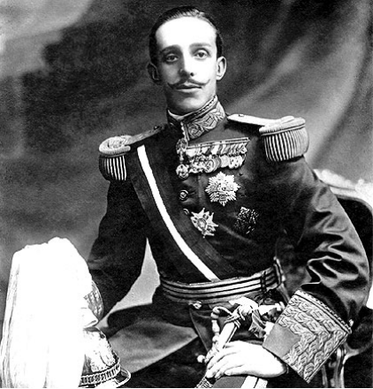
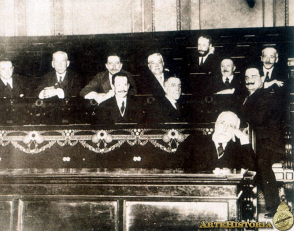

REFORMISMO DINÁSTICO
INTRODUCCIÓN
Tanto Antonio Maura como José Canalejas, el primero conservador y el segundo liberal, coincidieron en propugnar una profunda renovación del sistema de turno de partidos en los primeros años de este siglo. Maura afirmaba que la Restauración carecía de aliento popular porque el pueblo español no intervenía en la vida pública. Maura fracasó en su intento de llevar a cabo una revolución política desde el gobierno y lo mismo le pasó a Canalejas, que fue asesinado. Oposición a la restauración: Republicanos, socialistas y nacionalistas. Republicanos: fueron la principal fuerza de oposición política, a pesar de estar marginados del sistema, tuvieron permanentemente entre un 3% y un 6% de los escaños. Su fuerza consiste en que, al ser menos radicales que los socialistas y anarquistas gozaron del apoyo de los intelectuales, pero su problema es que frecuentemente aparecía dividido fundamentalmente en 2 partidos: radicales y el partido reformista. Socialistas: los socialistas en España serán liderados por Pablo Iglesias, que en 1879 fundó el partido socialista obrero español (PSOE) de ideología maxista.
OBJETIVOS
-
Generales
- Representar de una forma clara y precisa los sucesos de la Crisis de Restauración en España, especificando Las Fuerzas de Oposición y el Reformismo Dinástico.
-
Especificos
- Identificar la importancia de Maura y Canalejas en el sistema político español.
- Indagar el proceso de las fuerzas opositoras de la Restauración española.
¿QUÉ ES EL REFORMISMO DINÁSTICO?
Se le llama reformismo dinástico a las reformas que proclamaron Maura y Canalejas tras la subida al trono de Alfonso XIII con solo 16 años de edad. Era una nueva generación de políticos influenciada por el regeneracionismo, que impulsó proyectos de reforma más importantes desde el interior del sistema.
De 1907 a 1909 Maura protagonizó una de las mayores reformas llamadas “Revolución desde arriba” es decir, un intento de regeneración del sistema a partir de la formación de una nueva clase política que tuviese el apoyo social de las llamadas masas neutras. Con esto pretendía gobernar de una forma eficaz y dejar atrás la forma caciquil y evitar que las masas populares adquieran un protagonismo. Con esto llevó a cabo una leyes de elecciones, pero con esto no llegó a nada ya que no logró acabar con la corrupción.
GOBIERNO DE CANALEJAS
Canalejas tuvo frecuentes problemas relacionados sobre todo con el orden público. Pero supo hacerles frente con autoridad, lo que tranquilizó a las clases conservadoras. En ocasiones fueron simples conflictos laborales aunque a veces complicados por afectar a los servicios públicos como, por ejemplo, la huelga de ferroviarios del verano del año 1912, en la que Canalejas tuvo que recurrir a su militarización.
LAS FUERZAS DE OPOSICIÓN
La oposición a la Restauración estuvo representada,principalmente por el Republicanismo,el Carlismo,los Nacionalismos catalán y vasco,y el movimiento obrero con sus dos tendencias:Anarquismo y socialismo.
Republicanos
Los Republicanos era el principal grupo de la oposición
política y que constituía la minoría parlamentaria de
oposición más numerosa,su fuerza era notable en las
zonas urbanas,donde el voto se podía expresar con mayor
libertad y la influencia caciquil era menor.Con el nuevo
siglo el republicanismo sufrió una evolución donde los
partidos y los líderes hegemónicos perdieron
protagonismo,este nuevo republicanismo se caracterizó
por ser un movimiento social amplio de carácter
reformista,que agrupaba los sectores de la burguesía
librepensadora y amplias capas de las clases populares.
Unión republicana de Nicolás Salmerón (1903) Esta
coalición intentaba agrupar a los diferentes grupos
republicanos de Nicolás Salmerón,su programa incluía la
restauración de la Constitución de 1869,la proclamación
de la República y la convocatoria de Cortes
Cobstituyentes.
Partido Reformista De Melquiades Álvarez
Melquiades
Álvarez fundó en 1912 el Partido Reformista,que se
declaraba Republicano y ofrecía un programa basado en la
democratización profunda de la vida política.
Partido Radical de Alejandro Lerroux(1908)
El acercamiento entre el catalanismo y la Unión
Republicana dio lugar a la fundación del Partido
Republicano Radical,liderado por Alejandro Lerroux,tuvo
un importante apoyo social y electoral en Barcelona,con
su discurso anticatalanista,profundamente
demagógico,anticlerical y supuestamente revolucionario.
Blanquismo de Vicente Blasco Ibañez
En Valencia,Vicente Blasco Ibañez impulsó el
blanquismo,un movimiento populista y anticlerical que
presentaba notables semejanzas con el lerrouxismo.
Nacionalismos: La evolución de los nacionalismos
catalán y vasco.
Tras el desastre del 98,se incrementó en Cataluña y país
vasco la actividad de los partidos nacionalistas.
- Cataluña: Tras la victoria en las elecciones municipales de 1905 de la Lliga regionalista,liderada por Prat de la Riba y Cambó,alarmó al ejército que veía peligrar la unidad del país. Tras la publicación de unos comentarios satíricos en la revista Cu-Cut algunos grupos de oficiales asaltaron e incendiaron varias imprentas y redacciones. El gobierno liberal de Moret apoyó al ejército y promulgó la Ley de Jurisdicciones, que establecía que los delitos contra la nación y el ejército serían juzgados por tribunales militares. Cataluña reaccionó con la formación de una coalición electoral, Solidaritat Catalana, que incluía a todas las fuerzas políticas catalanas (exceptuando lerrouxistas y partidos dinásticos).Durante los siguientes años, el catalanismo moderado, representado por la Lliga, alternó etapas de colaboración con el gobierno con otros momentos de mayor radicalización. En 1931 se formará Esquerra Republicana de Cataluña.
- País Vasco Por lo que se refiere al País Vasco, el PNV, incrementó su presencia electoral y su influencia en la sociedad vasca. En 1916 cambió de nombre con el fin de atraer a la burguesía al ámbito nacionalista (Comunión Nacionalista Vasca). Desde la muerte de Arana se abrieron dos tendencias: los partidarios del independentismo y los más moderados, partidarios de la autonomía. Unos y otros acabaron uniéndose de nuevo en 1930 bajo la denominación tradicional de PNV.
El movimiento obrero: entre el anarquismo y el socialismo.
El nuevo siglo comenzó con un intenso ciclo de
agitaciones obreras, que fueron aumentando hasta 1911,
cuando tuvo lugar un intento de huelga general
revolucionaria. La mayor incidencia del movimiento
huelguístico se dio en Cataluña, Valencia, Andalucía y
Asturias, País Vasco y Madrid.
Con el fin de consolidar la difusión del anarquismo y
abarcar el conjunto del territorio español, en 1910, el
sindicato Solidaridad Obrera promovió la fundación de la
Confederación Nacional del Trabajo (CNT) que se
convirtió en la principal organización obrera del país.
En 1918, la CNT contaba con más de 700.000 afiliados y
sus principales líderes eran Salvador Seguí, Ángel
Pestaña y Joan Peiró. En los años 1911 y 1914, la CNT
estuvo prohibida y perseguida. En 1919, tras el Congreso
de Sants (Barcelona) se reafirmó en su apoliticismo, la
negociación directa entre empresarios y obreros y la
acción directa, lo que incrementó las acciones
violentas. Entre 1918 y 23, el anarquismo vivió,
especialmente en Barcelona, unos años de enfrentamiento
con las fuerzas del orden público (época del
pistolerismo).
En la primera década del siglo XX, el PSOE fue
abandonando paulatinamente su aislamiento político y se
mostró partidario de establecer coaliciones electorales
con los republicanos. En 1910, y gracias a esa
coalición, el socialismo entró en el juego
parlamentario, y a partir de ese momento conoció un
notable incremento de su fuerza electoral y de su
influencia en la vida política. Sus principales líderes
eran Pablo Iglesias, Julián Besteiro y Franciso Largo
Caballero, que estaba al frente del sindicato
socialista, la UGT (en 1919 contaba con 211.000
afiliados).
A partir de 1917, el PSOE se vio inmerso en un creciente
proceso de radicalización que explica su participación
en las huelgas generales convocadas ese mismo año. En
esa época, el partido experimentó un importante debate
interno en torno a las consecuencias de la revolución
soviética. Su rechazo a integrarse en la Internacional
Comunista promovida por Lenin provocó una escisión en
1921, que fue el origen del Partido Comunista de España
(PCE), cuyos líderes más destacados fueron José Díaz y
Dolores Ibárruri.
La importancia del gobierno de Canalejas radica en que,
tras el gobierno largo de Antonio Maura, fue el segundo
intento de regeneración desde dentro del régimen
político de la Restauración pero el asesinato de
Canalejas por un anarquista en la Puerta del Sol de
Madrid truncó su proyecto de democratización de la
Monarquía de Alfonso XIII.
Maura creó el Instituto Nacional de Previsión por ley de
febrero de 1908, institución encargada de la seguridad
social. También se debe al gobierno de Maura la Ley de
protección a las industrias de 1907. Volvió al Congreso
con su proyecto de reforma de la Ley de Administración
Local.
Las fuerzas de oposición se dividieron en distintas
zonas, pero las que más destacaron fueron las fuerzas de
Cataluña, pues se basa en un fuerte elemento cultural en
los años 40 del S. XIX, nació el renacimiento, es decir,
un renacimiento de la cultura catalana basada en el
idioma catalán, a este elemento cultural hay que sumarle
un elemento foral, nostalgia de las leyes propias de
Cataluña, es decir, los fueros, los borbones y un
fortísimo elemento económico basado en un intenso
proteccionismo que beneficie a la industria catalana.
LA DICTADURA DE PRIMO DE RIVERA (1923-1930)
Durante el periodo 1919-1921, los problemas sociales se recrudecen, sobre todo en Barcelona. A las huelgas obreras y los atentados anarquistas responden los patronos con la creación de grupos dedicados a ejercer la violencia contra los líderes sindicales, y el gobierno con la aplicación de la “ley de fugas”. La larga crisis del sistema canovista se resolvió de forma inesperada mediante el golpe de Estado de Primo de Rivera, reformista y regeneracionista, aceptado por el monarca. El golpe se transformó en una dictadura que fomentó el desarrollo económico y mantuvo la paz social, a cambio de suspender la Constitución, prohibir la actividad política y controlar la prensa. El intento final de establecer un Estado corporativista apoyado por un partido único fracasó, y España volvió a encontrarse con los mismos dilemas que antes del golpe militar.
OBJETIVOS
-
Generales
- Dar a conocer las causas y consecuencias de la dictadura de Primo de Rivera que tuvo lugar en España bajo un golpe de estado cuyo principal objetivo fue terminar con el sistema parlamentario para garantizar el orden público y darle solución al problema con Marruecos.
-
Especificos
- Identificar las causas y consecuencias que dieron lugar a la dictadura del militar Miguel Primo de Rivera por medio de una investigación previa, para luego plasmarla en una infografía para la fácil comprensión del tema a tratar.
- Analizar el éxito que tuvo la dictadura de Primo de Rivera al tratar de solucionar la crisis y los problemas vividos en España durante el reinado de Alfonso XIII y si estos cambios fueron lo suficientemente grandes para mantenerse estables durante un determinado tiempo.
DESARROLLO
La dictadura de Primo de Rivera fue iniciada por Miguel
Primo de Rivera, quien fue el capitán general de
Cataluña y que fue parte del golpe de estado del 13 de
septiembre del año 1923 contra el sistema político de la
Restauración. Una de las razones de este golpe militar
fue el mal desarrollo de la guerra en Marruecos, la
corrupción política, la conflictividad social entre
patronos y obreros y la creación de los nacionalismos
catalán y vasco.
El general Primo de Rivera instauró en 1923 una
dictadura militar con la ayuda del monarca Alfonso XIII,
la iglesia y el ejército. Su ideal político se basó en
el patriotismo, el centralismo, el autoritarismo y el
catolicismo. La implantación de la dictadura supuso la
supresión del sistema parlamentario de la Restauración;
La Constitución de 1876; las Cortes Generales; partidos
políticos y los sindicatos. La dictadura buscó apoyo en
la represión del sindicalismo anarquista de parte de los
socialistas y tuvo dos fases: El directorio militar y el
civil.
1 - LAS CAUSAS DEL GOLPE DE ESTADO.
Causas internacionales: Giran en torno a los acontecimientos europeos surgidos tras la Primera Guerra Mundial:
- El triunfo de la revolución bolchevique en Rusia. En el año 1923, tiempo en que se produjo el golpe militar del general Primo de Rivera, ya se había consolidado el comunismo en Rusia tras el triunfo de los bolcheviques sobre los “generales blancos” en la guerra civil que siguió a la revolución; y también que en 1921 se había fundado en España el Partido Comunista, a partir de una escisión del PSOE.
-
En segundo lugar la crisis de la democracia y el
surgimiento inmediato del fascismo italiano,
contrarrevolución preventiva surgida en Italia para
conjurar el peligro de revolución marxista.
En Europa Central, en el Japón y en los Balcanes se instauraron también regímenes autoritarios y en Alemania ya planeaba la sombra de Hitler. Según se deduce del análisis de los hechos, todo parecía indicar a primera vista que la democracia se batía en retirada por todas partes ante el avance de los autoritarismos y los totalitarismos, donde la crisis de los sistemas democrático-burgueses parecía irreversible, así como su sustitución por regímenes autoritarios o totalitarios.
Sin ser fascista, Primo de Rivera era admirador de Mussolini, a quien vio como un defensor en la lucha contra la corrupción y la anarquía que afectan a Italia. El mismo rey Alfonso XIII llegó a denominar a Primo de Rivera como “mi Mussolini”.
Causas internas: Se inscriben en el marco de las internacionales:
1 - En primer lugar, el agotamiento del sistema de la
Restauración y la crisis de la monarquía parlamentaria,
de la cual la fragmentación e inoperancia de los
partidos políticos era el síntoma más que la causa. En
la parte de las izquierdas, la radicalización del
socialismo, especialmente después de la entrevista entre
Lenin y Fernando de los Ríos, y la fundación casi
inmediata del Partido Comunista de España, a partir del
sector más extremista del PSOE, llegó a suponer que un
gobierno autoritario podría frenar el movimiento obrero
y la agitación social.
2 - En segundo lugar, el creciente protagonismo del
ejército en la vida política del país. El desastre de
Annual, fue la última humillación militar sufrida por el
ejército. Las casi 13000 bajas padecidas en la
descabellada e imprudente operación estratégica del
general Silvestre gravitaba pesadamente sobre la opinión
pública española. La instrucción del llamado -expediente
Picasso- es un hecho que no se puede omitir a la hora de
aportar un motivo suplementario para explicar el golpe
militar de Primo de Rivera. Este fue el nombre que se
dio a una investigación sobre las circunstancias que
llevaron al desastre de Annual. La instrucción del
expediente enfrentó a los militares con las Cortes, que
trataban de averiguar toda la verdad de lo sucedido y
depurar las responsabilidades que hubiera. Unos y otros
buscaban la instauración de un poder fuerte que diera
satisfacción a sus deseos.
3 - En tercer lugar se encontraba la grave situación del
orden público, cuya manifestación más extrema fue la
llamada “guerra social” barcelonesa, y su consecuencia
más notable el cansancio del pueblo en general y de los
grupos políticos y sociales en particular ante la
situación que se vivía. La corrupción política, el alza
de los precios y la sangría permanente de Marruecos
reclamaban según algunos una solución drástica al
problema; una política “quirúrgica” que hundiera el
bisturí en los males que aquejan a la nación. La idea
regeneracionista del -cirujano de hierro-, que acuñó
Joaquín Costa, fue aireada por la prensa tanto de
izquierda como de derecha, y empezó abrirse paso entre
los españoles.
4 - Por último, el auge de los nacionalismos periféricos
alarmó a las fuerzas más sensibles del país. El
nacionalismo catalán y vasco era visto con repugnancia
tanto por el ejército como por los grupos de ideología
derechista, a pesar de que el catalanismo era en aquel
momento muy moderado.
5 - También se puede considerar como causa del golpe de
Estado, que posiblemente Primo de Rivera no pretendía
poner fin a un régimen caduco y anquilosado, sino más
bien evitar que el régimen político acabará por
democratizarse.En efecto, el último gobierno de
concentración de García Prieto, se había planteado
objetivos democratizadores de la vida política española
como la libertad de culto, la reforma de la ley
electoral, la reforma del Senado, entre otras. Así, el
golpe de Estado se presentaba también como una forma de
frenar esa posible reforma del sistema que podía
resultar amenazadora para ciertos sectores e intereses
sociales.
2.- EL GOLPE DE ESTADO.
El 13 de septiembre de 1923, Miguel Primo de Rivera,
Capitán General de Cataluña, encabezó el Golpe de Estado
que triunfó en todo el país y que fue visto con buenos
ojos por el rey Alfonso XIII. El destino de la monarquía
española quedaba así ligado al del Dictador, y su caída
arrastraba un año después a Alfonso XIII.
No ha podido demostrarse que el Rey promovió el Golpe de
Estado, pero no cabe duda de que estaba enterado de lo
que se tramaba en los cuarteles; además Alfonso XIII se
sentía ahogado por una Constitución (la de 1876) que le
dejaba poca libertad de acción. Primo de Rivera, militar
de prestigio en las campañas de Cuba, Filipinas y
Marruecos, contó para hacer triunfar el Golpe de Estado
con el apoyo de algunos generales, como Sanjurjo en
Zaragoza y, especialmente, la del gobernador militar de
Madrid, Duque de Tetuán.
El Presidente del Gobierno, García Prieto, solicitó al
Rey que destituyó a los militares sublevados; al negarse
éste, el gobierno no tuvo más remedio que dimitir.
Entonces el Rey llamó al General Primo de Rivera para
que se hiciese cargo del Gobierno, y por Real Decreto de
15 de septiembre de 1923, tomó el “cargo de Presidente
del Directorio Militar encargado de la gobernación del
Estado”.
Ese mismo día dio a conocer un “Manifiesto al País y al
Ejército”, donde expresaba su decidido propósito de
liberar a España de los profesionales de la vieja
política y de emprender urgentes reformas económicas,
sociales y políticas.No pretendió establecer un régimen
definitivo; ésta contradicción entre la liquidación
política de la Restauración y la provisionalidad del
sistema dictatorial se volvería contra él.El argumento
justificador del golpe era la consideración de que el
régimen constitucional estaba bloqueado y desprestigiado
y que existía un grave peligro de revolución social. El
dictador justificó su acción no como un fin, sino como
un remedio indispensable.
La Dictadura tuvo siete años de vida en la que se
sucedieron dos formas de gobierno: el Directorio Militar
(1923 – 25) y el Directorio Civil (1925 – 30), así
denominados por la procedencia de sus miembros. El
Directorio Militar se presentaba como un régimen con
carácter interino con la pretensión de solventar los
problemas pendientes; El Directorio Civil pretendía la
institucionalización del régimen y mostraba mayor
interés por las cuestiones de índole económico y social.
Hay que decir que el nuevo golpe de estado recibió un
importante apoyo de la burguesía española, especialmente
la catalana, la más ”moderna” del país. Otros grupos
conservadores como la Iglesia y, por supuesto, el
ejército, no recibieron mal el golpe. También contó con
el apoyo de la llamada “masa neutra”, cansada del caos
social de los últimos cinco años.
Aunque existe una coincidencia cronológica con el
fascismo italiano, sin embargo la figura La de Primo de
Rivera no se parece en nada a la de Mussolini. Sus
objetivos estaban definidos en el lema “menos política y
más administración”.
El régimen de la dictadura fue, por tanto, una solución
transitoria al desmoronamiento del sistema político de
la Restauración. Su actuación se caracterizó más por la
improvisación que por la puesta en práctica de un
verdadero programa político. llegó a durar algo más de
seis años.
3 - EL DIRECTORIO MILITAR (1923 - 1925)
En esta primera etapa, considerada provisional, Primo de
Rivera asumió todos los poderes al frente de un
directorio militar que dejó en suspenso la Constitución,
disolvió las Cortes, prohibió los partidos políticos y
censuró la prensa. También disolvió las diputaciones,
mientras que los gobiernos civiles provinciales fueron
cedidos a los militares y los alcaldes eran nombrados
por el gobierno.
Su programa era terminar con los males de España:
desorden social, caciquismo, problema de Marruecos;
bancarrota económica... Como era de esperar, Primo de
Rivera se atribuyó la potestad de gobernar a base de
decretos.
Para restablecer el orden público, se abolieron las
libertades y se intensificaron las acciones represivas
contra los sectores más radicales del movimiento obrero.
La actuación contra los desórdenes públicos produjo sus
efectos inmediatamente. La delincuencia común retrocedió
hasta niveles insospechados algunos años antes.El error
de Primo de Rivera fue confundir con delincuencia lo que
era simplemente la protesta o reivindicación política
del movimiento obrero. La prohibición de manifestaciones
y la censura de prensa fueron los dos instrumentos
utilizados para reprimir lo que se entendía como
delincuencia.Después, la represión se ejerció
especialmente sobre los nacionalismos, los
intelectuales, la prensa y la CNT.
La burguesía catalana, había prestado su apoyo al golpe
militar de septiembre. Sin embargo, una vez instalado en
el poder, Primo de Rivera se mostró remiso a reconocer
el hecho diferencial catalán. Alertado tal vez por el
ejemplo de los nacionalismos divergentes europeos, llegó
a confundir el sentimiento regionalista con el
separatismo, prevención que le llevó a suprimir casi
inmediatamente la senyera, la bandera de Cataluña, el
himno catalán Els segadors, y a decretar medidas contra
el uso de la lengua catalana a la que intentó relegar al
ámbito doméstico. Se suspendió la enseñanza del catalán
y hasta se castellaniza el nombre de las calles. La
clausura del Fútbol Club Barcelona, del Orfeó Catalá, la
prohibición del baile de la sardana y la liquidación de
la Mancomunidad en 1925. Todas estas medidas hicieron
que el régimen fuera visto en Cataluña como
profundamente anti-catalanista, provocando un
distanciamiento de la burguesía catalana. Se deduce que
la política primorriverista respecto al problema
nacionalista fue muy torpe, y lejos de eliminar el
nacionalismo, lo enfrentó con la Monarquía, lo que
contribuyó en buena medida a su caída en 1931.
La regeneración política era uno de los objetivos
primordiales del discurso del dictador.
Con el objetivo de liquidar el caciquismo, se elaboró un
Estatuto Municipal y otro Provincial.
El régimen propugnaba una nueva forma de hacer política
y para esa tarea se creó un nuevo partido, la Unión
Patriótica que sería, según Primo de Rivera, un partido
nacional y apolítico. Se trataba de un partido
gubernamental, sin un programa ideológico definido y
cuya misión primordial era proporcionar apoyo social a
la Dictadura y seguir las directrices de la
superioridad.
Era un movimiento más que un partido propiamente dicho,
que intentaba agrupar a las gentes de buena fe –en
palabras del dictador– que estuviesen dispuestos a
servir con lealtad a la Patria.
Estos comités se hallaban bajo la tutela del Estado,
cuya intervención era arbitral, además de legislativa.
Su misión era la reglamentación de los salarios y de las
condiciones de trabajo, así como la mediación en caso de
conflictos laborales. Durante la primera etapa de la
Dictadura, el conflicto de Marruecos centró el interés
de Primo de Rivera, que asumió personalmente el Alto
Comisionado de Marruecos en 1924. A partir de 1925 se
inició una política de colaboración con Francia que
incluyó una acción militar coordinada. Fruto de esa
colaboración fue el desembarco de Alhucemas (1925) que
se saldó con gran éxito.
La “pesadilla de Marruecos” había terminado y toda una
generación de militares: Sanjurjo, Varela, Franco, Mola,
Muñoz Grande, había rehabilitado de pronto el prestigio
del ejército español. La victoria en Marruecos y los
éxitos económicos obtenidos durante el escaso tiempo
–dos años– del directorio militar afianzaron el poder
personal de Primo de Rivera lo que le llevó a intentar
institucionalizar la dictadura sustituyendo el
directorio militar por un directorio civil. Esta
decisión representaba un hecho nuevo: la dictadura, que
nació con una idea de provisionalidad, parecía querer
estabilizarse como régimen permanente.
4 - EL DIRECTORIO CIVIL (1925-1930)
Con una situación del país más estable,y aprovechando la
popularidad conseguida por la finalización de la guerra
de Marruecos, Primo de Rivera, en lugar de retirarse,
formó un nuevo gobierno en el que dio entrada a
personalidades civiles, como Calvo Sotelo (Hacienda) yel
conde de Guadalhorce (Fomento). Durante el Directorio
Civil, Primo de Rivera intentó institucionalizar la
dictadura, creando un régimen nuevo que reemplazará al
de la Restauración, para ello convocó un plebiscito
(1926) que dio paso a la Asamblea Nacional Consultiva
(1927), La Asamblea tuvo un carácter corporativoy
autoritario; estaba compuesta por representantes de las
corporaciones elegidos por sufragio indirecto.
La Asamblea Nacional debía elaborar una nueva
Constitución, con lo cual quedaba roto definitivamente
el pilar fundamental del sistema de la Restauración: la
Constitución de 1876.
El anteproyecto de constitución, duró añoy medio, el
proyecto no satisfizo a nadie, ni siquiera a Primo de
Rivera, a causa de los amplios poderes que se habían
concedido al Consejo del Reinoy, sobre todo, al Rey, en
detrimento del Gobiernoy de su presidente. El 13 de
septiembre de 1929, sexto aniversario del golpe de
Estado, Primo de Rivera hizo públicas sus reservas sobre
el proyecto de Constitución, destacando su
«desequilibrio de poderes» a favor de la Corona. Pocos
meses después de su presentación el anteproyecto se
hallaba completamente estancado,y ponía de manifiesto la
incapacidad de la Dictadura de crear algo originaly
distinto del sistema de la Restauración que se
sustentaba sobre la Constitución de 1876. En cambio, lo
que sí consiguió el Directorio, al amparo de la
expansión económica internacional de los llamados
“felices veinte”, fue un amplio despegue económico que
empujó al país hacia la modernidad.
➢ Numerosas obras pública. ➢ Impulso de la actividad
industrial, especialmente en torno a Madrid y Barcelona.
➢ Desarrollo del sector de servicios. ➢ Finalmente, todo
este proceso culminó en la Exposición Internacional de
Barcelona yen la Exposición Iberoamericana de Sevilla.
Esta política, orientada hacia la defensa y protección
de la economía española para impulsar su reactivación
fue a corto plazo.
5 - EL FIN DE LA DICTADURA Y LA CAÍDA DE LA MONARQUÍA
A mediados de 1928 se hizo patente la decadencia de la
dictadura. por varios factores: el creciente aumento de
la oposición al régimen que abarcaba un amplio espectro
político (republicanos, anarquistas, comunistas,
nacionalistas, estudiantes e intelectuales, entre los
que destacaron Unamuno, Ortega y Gasset, Marañón).
Creció el descontento en un sector del ejército por las
arbitrariedades de Primo de Rivera. Las crecientes
dificultades presupuestarias del Estado, endeudado e
incapaz de realizar una reforma fiscal que estableciera
un impuesto único y progresivo sobre la renta debido a
la oposición de las clases acomodadas.La reaparición de
los conflictos sociales con movimientos huelguísticos
motivó que los socialistas le abandonaran.
Aquejado de una grave enfermedad Primo de Rivera
presentó su dimisión al rey Alfonso XIII el 27 de enero
de 1930, quién se apresuró a aceptarla presionado por
los políticos conservadores y liberales que deseaban
volver al parlamentarismo. Primo de Rivera se exilió a
París donde murió dos meses después.
Ante el fracaso de la dictadura, Alfonso XIII quiso
volver al régimen parlamentario y nombró jefe de
gobierno al general Berenguer con la tarea de reponer la
Constitución de 1876 y salvar la figura real, cada vez
más impopular por considerarlo responsable directo de la
dictadura. Berenguer mantuvo un régimen dictatorial
suavizado- conocido como la dictablanda.En agosto de
1930 se firmó el Pacto de San Sebastián entre todos los
opositores republicanos, socialistas, radicales y
catalanistas de izquierda; la CNT no participó pero dio
su adhesión. Acordaron poner fin a la monarquía. A su
vez los intelectuales crearon la Agrupación al servicio
de la República, dirigida por Ortega y Gasset.
Ante la situación cada vez más tensa, el general
Berenguer dimitió en febrero de 1931, siendo sustituido
por el almirante Aznar quien formó un gobierno de
concentración con los políticos de los viejos partidos
dinásticos. En un clima de creciente agitación
republicana, para dar una imagen de libertad pero sin
exponerse excesivamente, Aznar convocó elecciones
municipales para abril. Aunque las candidaturas
monárquicas lograron cierta mayoría en las zonas
rurales, en cambio las candidaturas republicanas
triunfaron en las grandes ciudades, lo que se interpretó
como el deseo mayoritario de implantar la república.
Ante ello, Alfonso XIII se vio obligado a cesar en sus
funciones y abandonó España camino del exilio, mientras
el 14 de abril se proclamaba la Segunda República.
¿Qué pasó después de la dictadura de Primo de Rivera? Este suceso, unificado a la evacuación del apoyo del monarca Alfonso XIII a la dictadura primorriverista, desató la dimisión irrevocable del general Miguel Primo de Rivera el 28 de enero de 1930. El expresidente gubernamental marchó al exilio de manera voluntaria y prevaleció en París hasta su muerte en dicho año.
Características de la dictadura de Primo de Rivera: Era una dictadura autoritaria cuyas primeras medidas fueron: la suspensión de la Constitución de 1876 y de los derechos constitucionales, la separación de las Cortes y el establecimiento de un Directorio militar, presidido por Primo de Rivera, delegado de administrar el territorio.
La política social se caracterizó por la represión de
los sindicatos más radicales, (la CNT fue ilegalizada) y
por un cierto reformismo social de signo paternalista,
que introdujo algunas mejoras en la posición de los
trabajadores: seguro de enfermedad, descanso dominical,
viviendas protegidas, enseñanza profesional. Se trató de
buscar alternativas a los enfrentamientos entre patronos
y obreros. A tal objeto se creó el Consejo Nacional de
Trabajo (1924), que reemplaza al anterior Instituto de
Reformas Sociales, como paso previo a la creación de la
Organización Corporativa del Trabajo (1926). Esta tenía
una composición mixta para la regulación de los
problemas laborales, red que se organizaba en comités
paritarios.
En conclusión, por lo que hemos leído, la Dictadura de
Primo de Rivera fase parte de las señaladas "dictaduras
mediterráneas" y se presenta como una solución al
continuo pleito de caída del sistema político español,
comenzado con la crisis de la Restauración. Sin embargo,
la desaparición de las reformas profundas que prometía
el nuevo régimen, ampliado al fuerte intervencionismo
del rey provocará la progresiva pérdida de apoyos, que
acabará suponiendo la definitiva caída del sistema y la
monarquía con la proclamación de la II República.
Además, el régimen generará una deuda cuyos efectos se
harán percatarse durante la República.
BIBLIOGRAFÍAS
- de España, H. (2015). Dictadura de Primo de Rivera. Historia de España. https://historiaespana.es/edad-contemporanea/dictadura-primo-de- rivera
- Educación, V. (2011, junio 1). La Dictadura de Primo de Rivera (1923-1930). VENTURA. https://vaventura.com/tema/restauracion/la-dictadura- primo-rivera-1923-1930
- Resumen de la Dictadura de Primo de Rivera - TEMA 14 DICTADURA DE PRIMO DE RIVERA INTRODUCCIÓN En. (s/f). StuDocu. Recuperado el 8 de julio de 2022, de https://www.studocu.com/es/document/universidad-de- murcia/historia-de-espana-acceso-a-la-universidad-mayores-de- 25/resumen-de-la-dictadura-de-primo-de-rivera/28286845
- Wikipedia contributors. (s/f). Dictadura de Primo de Rivera. Wikipedia, The Free Encyclopedia. https://es.wikipedia.org/w/index.php?title=Dictadura_de_Primo_de_R ivera&oldid=144234026